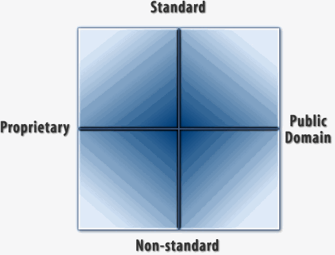
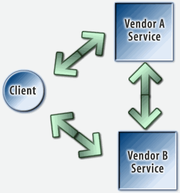

![[ TABLE OF CONTENTS ]](../gx/indexnew.gif)
![[ FRONT PAGE ]](../gx/homenew.gif)


Craig Burton knows what makes platforms succeed. It was his strategy at Novell that established NetWare as the first Network Operating System (a term Craig coined), and completely changed the whole network conversation in the process. Later, at The Burton Group, Craig and his colleagues successfully moved the same network conversation to a new understanding of networks themselves: not as "pipes and protocols," but rather as services such as print, file, management, directory, security, messaging and Web.
Now President of Burton Associates, Craig modestly describes himself as "a voice of common sense and reason with proven sensibility." I disagree. Craig is an exceptional voice of uncommon sense. That's why we wanted to talk with him. More than anybody I know, Craig is the Voice of Reality. Don't talk to the guy unless you want to face straight shots and tough questions. That's what businesses want from their customers. And that's what Craig gave us.
– Doc Searls
Craig: I see three:
Doc: Let's start with number one.
Craig: Linux has already passed the first big milestone. There is no other hardware independent OS — besides Windows — on the map. And by all accounts, Linux will have exponential growth over the next twelve to eighteen months, while NetWare and NT sales will only grow incrementally. So the Linux stake is already in the ground and no one can take that claim from the movement.
Doc: Which brings us to your second point.
Craig: The question at hand is, can Linux make the next jump? That jump is to prime-time back-office. Some Linux vendor needs to provide a platform with a set of services that is more robust and innovative than Windows, and do it faster than Microsoft. These services need to really solve customers' backend problems. I think it is up to one primary vendor.
Doc: Who will that be?
Craig: I just don’t see a back-office vision coming from any existing Linux supplier. Clearly Red Hat is making a run for it. But does Red Hat have the lineage and leadership to make the jump shift this market needs? We don’t know. Time will tell. In the meantime Red Hat is doing its best to drive a sense of growth and excitement around Linux right now. But excitement alone does not a jump shift make. There must be real meat to the commitment and sound vision behind the hype. So far, I don’t see that showing up.
Doc: Red Hat's publicity is focussed on the desktop, and modeling itself after the great mass market success stories. That's why they talk about "branding" and "audiences" of "consumers." This attracts a lot of investment from guys who want to place bets with the Linux company that looks like a winner.
Craig: Yet Linux will never be a contender for the mass client market. Do the numbers. It is simply impossible. Windows growth would have to go to zero and Linux would have to grow exponentially for the next eight to ten years before it would even begin to gain on Microsoft. And until Linux is at 20% market share, no serious developer is going to give it any respect.
Doc: What about the work that has already been done on the desktop? Gnome and KDE look pretty good.
Craig: Those are going to attract developers? Why? Where's the standard? More to the point, where is the alignment with reality? Look, Linux is in a hell of a good position. It is past the first major hurdles. But now what? If Linux intends to win on the basis of "mine is better than yours," Linux will loose. But if some Linux vendor can marshal a plan that leverages Linux momentum and lays serious infrastructure foundation that Microsoft simply can’t match because of its legacy, then by God we have something. The job of Linux is to make the back office pie bigger, not to steal desktop market share from Microsoft. That can’t be done. Why try?
Doc: How can Linux make the pie bigger?
Craig: Let’s focus on the real opportunity here. Microsoft is caught in workstation hell. Linux is totally unfettered from Windows legacy. So why try to be Windows? Do what Microsoft and no one else is doing. Deliver infrastructure capable of changing computing. And stop attacking Microsoft because it's "bad." That's not strategic.
Doc: Why not?
Craig: When enterprises choose Linux, the logic will be AND, not OR. And Linux will succeed not to the degree it displaces or replaces Microsoft, but to the degree it adds new computing benefits to enterprises where Microsoft is already established. Enterprises are not going to throw away Microsoft operating systems, services and applications. Those things are serious infrastructure. And many companies develop their own internal solutions using Microsoft tools; and Microsoft is extremely supportive of that development.
Doc: Why is Microsoft in workstation hell?
Craig: Microsoft can't move fast because it has too much legacy to support. Look at the list of operating systems they're dragging along: DOS; Windows 3.1, 95 and 98; Windows NT 4.0 Workstation and Server, plus NT Service Packs 1,2,3,4 and 5 (which are functionally all releases of the OS); Windows 2000; and Windows NT 5000 Workstation and Server. And Microsoft is anything but consistent across all those OSes. Linux has none of that, and it's a big advantage. A much cleaner slate. But there are down sides to Linux as well.
Doc: Such as?
Craig: Open source. It's a great rallying cry, but is it what customers want? Are enterprises praying for open source? On the contrary, they fear open source.
Doc: So you think the coverage of open source is misleading?
Craig: Totally. Take Apple's announcement about "opening" its OS/X server software. It was completely misleading. Every Apple OS is full of proprietary and closed code that they are not even in a position to open up. Look at Display Postscript from Adobe. John Warnock's will die before Adobe opens that source.
Doc: Is QuickDraw Adobe code?
Craig: Part of QuickDraw is Adobe code. That code is why you can display encapsulated postscript on a Mac and you can't in Windows, or Linux for that matter. Microsoft refuses to pay anything to Adobe for that functionality, even though it would be better for customers. And it's not open source, so you don't see it on Linux. But the Mac is so nice and smooth in the way it deals with what you see on the screen because of the display technology they invented themselves to emulate Postscript and embrace it without pissing off Adobe. That's not open source stuff, and it never will be.
Doc: That subject almost never comes up.
Craig: It never needed to – until now, when companies like Apple are making a virtue of going "open source" when in fact they can't open more than a small percentage of their code base. Open source for Apple was a desperation move. Apple is nowhere in the server space, so "opening" that source was safe. Same with Netscape's browser. It was headed nowhere when suddenly they yelled "everything is open source!" Then they whisped, "Oh, by the way, it doesn't include the object request broker" – which is fundamental technology that Netscape used to make a big deal about. Not included. It's a joke. A marketing ploy. Pure bullshit. If open source is so great, why don't Apple and Netscape open all their sources? Because it would make no business sense whatsoever. I'll battle any of the open source guys, any time, on that one. Get this straight: Mozilla is broken because it doesn't come with all the necessary pieces. And ironically it's the Open Source guys' biggest success story.
Doc: Do you think the battling browsers give us a controlled experiment right now, between open and closed source?
Craig: Absolutely. And tje closed side — MIcrosoft — is winning, big time. Going open source was great PR for Netscape, but the timing was bad because Netscape was about to get bought by AOL, which had to screw up the whole open source appeal. Who wants to hack on that?
Doc: Meanwhile the press plays Linux as David, Microsoft as Goliath, and open source as Goodness.
Craig: Screw that. This is not a Spielberg production pitting good against evil. This is not a question of right vs. wrong or good vs. bad. It’s a question of choice. Can a serious vendor do what is needed to field a sound choice for customers? It has nothing to do with Gates or the size of Microsoft. It’s just business.
Doc: And you think its doable.
Craig: Of course it’s doable. Is there a doctor in the house? Can someone holding the reigns drive this puppy home? We don’t know. That is the question.
Doc: Speaking of people holding the reins, have you read The Cathedral and the Bazaar, by Eric Raymond?
Craig: Yes. But I don't think it's cathedral vs. a bazaar here. It's a cathedral vs. a cult. They're both religions. This isn't to say that Eric Raymond doesn't make some very good points. But they are essentially partisan points: right vs. wrong. And they ignore the customers being served by the cathedral. He says the cathedral is what I call EWBU: evil, wrong, bad and ugly. Well, maybe it is. But if you want the cathedral's customers, you can't just tell them their church is EWBU and yours is holy, correct, good and beautiful. That's no business case.
Doc: Have you read Eric's various cases for open source? The businessperson's case, the techie/hacker's case, the customer's case...
Craig: Linux needs proof, not just cases. Corporate customers want accountability by a single company they can call up and demand service from. Not from a community of hackers, no matter how expert and helpful those hackers may be. They want to see software developed by command, not by consensus. And they trust a commanding company like Microsoft to pay attention to what they want. And I see no evidence the open source community cares about what the market wants. What I see is some guys saying Microsoft sucks and what they're doing is great. Well, that's a big hat, but where are the cattle? Show me the beef.
Doc: What about the reliability argument? We hear people telling us if you put Apache and Linux on a box and let it run, it just isn't going down. While NT crashes all over the place. Isn't that a technological argument?
Craig: It's bullshit. If somebody says any operating system isn't ever going down, theyr'e full of shit.
Doc: Well, the faithful are legion.
Craig: It's religion. Linux is the only "true" operating system. God/Buddha/Allah guided Torvalds' hands across the keyboard and caused him to build the only true and chosen operating system. Right. No disrespect intended, but Linux is not a predestined set of algorithms. The question should be simple: is Linux inherently less brittle than NT, and is the difference measurable? Let’s see the MTBF numbers, and then let's see what makes a difference, if we can tell. Which we probably can't because it's too hard to make them truly comparable. I think a better question is one of maturity. If Linux had the same number of applications as NT — applications that could potentially raise havoc with an OS — I would wager it would be no more reliable than NT. There is no magic key to building reliable platforms. Even the microkernel vs. monolithic kernel argument becomes religious at this point. I’m not saying technology doesn’t matter. I am saying that technology alone is not a reason to make a business decision. And no business decision gets made in a vacuum. Linux technology is simply one piece of an equation; not the answer to life, meaning, and the universe.
Doc: What about customer demand? We hear from Oracle, IBM, HP and other big vendors that there is a groundswell of customer demand for Linux.
Craig: There used to be big demand for OS/2 and DR DOS. So far I've heard very little in the way of specifics about Linux. Here's one question I'd have if I were a customer: are the Linux vendors afraid of each other? Does Red Hat feel threatened by Caldera and vice versa? My guess is: you betcha. And what I expect is that everybody will try to differentiate in ways that don't work for the customer who wants real interoperability. But I honestly don't know. Yet.
Doc: What specifically, as a customer, would you like to see coming from the Linux community?
Craig: I would want to see answers to these questions:
Doc: What about cost?
Craig: Linux is not free. That's a myth. The real costs are people and change maintenance. How many bodies do you have to throw at a project? We need to debunk the myth that Linux is cheap and easy – and that cost is why it's being adopted. Saving $495 on a license doesn't cut enough mustard. There are too many other costs, and if you don't factor them in, your customers will.
Doc: So how do you propose that enterprises make sense of Linux' appeal? Because clearly there is some appeal, and it is hardly limited to Web servers at ISPs.
Craig: What we need is a conceptual framework by which enterprises can start to understand a larger world that includes Linux as well as NT, open source as well as closed source, and problems that neither has yet solved – and there are many. Fundamentally, there are two issues at hand here. One is interoperability. Problems with interoperability transcend the virtues and liabilities of individual operating systems, applications and the protocols that should – and too often don't – allow them to work together. And the simple fact is that Linux and the applications it hosts will not be adopted by enterprises unless they interoperate with those enterprises' incumbent operating systems and applications. The other issue is business model. Open source development sounds very promising. But let's be real here: it remains unproven for the kind of goods that Microsoft and its closed source competitors provide in abundance and customers trust.
Doc: What do you mean by a conceptual framework?
Craig: At The Burton Group, we developed one called the Network Services Model, back in 1991. All of the major vendors have since saluted it, and most of them talk about network services in terms we provided for the first time with that model. But practicing it is another matter. Doing what's right for the customer, and for the marketplace, is not easy. And I submit that it's no easier for open source development than it is for closed. Everybody has some kind of agenda or subagenda that can be unfriendly to the market. With most commercial developers, it's trying to lock in customers and lock out competition. With open source developers, it's the open source religion. Tying to knock off Microsoft is not necessarily a way of serving the marketplace. It's a way of serving egos.
Doc: Can you tell us what the Network Services Model is, in brief terms?
Craig: Sure. It describes the basic rules by which different goods from different vendors should compete and cooperate in a networked world. It describes a set of services required of networks – notably file, print, management, security, directory, messaging and Web. And it predicts that these services will only scale and proliferate to the degree they are interoperable. It also says no one vendor or standards group can to do it all. That said, there are five elements to the model:
Doc: So how do you define or qualify a network service like security or directory, especially when different vendors and standards bodies have different definitions and agendas?
Craig: That's a good question, because it speaks directly to what customers want to see from Linux and the open source community behind it. To qualify, a network service must meet the following technical guidelines. It must have:
Here's the kicker: all four must be well defined, documented, and functional. Are they for open source?
Doc: Well, there are a number of standards bodies in and around the open source movement –
Craig: – Hold it right there. There are three kinds of standards, and two of them are to a high degree outside the scope of standards bodies. Those are:
De jure standards are "official" to the degree they been sanctioned by a standards body. The Internet suite of protocols is a good example of a de jure standard. De facto standards are defined by the market rather than by a standards body. Most legacy applications, services, protocols, and tools are all de facto-based products. Windows, Win32, NetWare, IPX/SPX, and SNA are all de facto standards. De rigueur standards are those based on the habits of markets, rather than by their conscious decisions. Or, in French, "necessary according to convention." In other words, beliefs. De rigueur is the subconscious side of de facto. The de rigueur standards Linux confronts might go like this: "Linux may be good for Web service, but not for anything else." Or "open source is unaccountable."
Countless de rigeur standards have been spectacularly wrong. "The world is flat." "The world is the center of the universe." "Precise latitude is impossible to calculate without a viewable landmark." "Manned flight is impossible." "You'll never need more than 640k of memory in your PC." One de rigeur standard we need to change right now says "proprietary means closed." In fact, proprietary is just one among several choices. Here is how they look on a matrix:

The opposite of standard is not proprietary. A standard is something defined by de jure, de facto, or de rigueur practices. Something "proprietary" is something owned. If a company owns the intellectual property rights of a product implementation based on standards, it does not define the product as part of the public domain. It defines the product as proprietary; because that company owns the product.
In this scenario, proprietary is orthogonal to standard and the opposite of standard is simply non-standard. The intermittent windshield wiper — now a standard — was based on non-standard technology at the time of its invention. It wasn't defined by a committee; it wasn't de facto, and certainly not de rigueur. The car manufacturers took one look at it, loved it, showed the inventor the door and knocked off the invention. To make a long story short, the inventor finally got wealthy by proving ownership of a nonstandard technology. The intermittent windshield wiper is a perfect example of a proprietary de facto and de rigueur standard.
On the other hand, there other many examples of de jure standards that are not proprietary, but "public-domain," that have never been successful. The OSI network transport protocol is a good example. The US government "mandated" OSI compliance. It never happened, and never will. As Scott McNealy said, "Big hat, no cattle."
This next matrix is a map of reality. Whatever you do — and whatever your customer chooses — is going to fall somewhere in here. It may be your religion to live in the upper right or the lower right corners. Or it may be your calling to offer goods in the upper left. The strategic way to look at this is: what works best where, and when? Which standard do you want to use? What do you want to keep proprietary or put in the public domain, and what are the trade-offs? And remember that there will always be tradeoffs.
Notice that the opposite of Gratis License is License for Fee and Open Source is orthogonal to each of these terms. The opposite of Open Source is Binary Source.
Doc: And there are hybrids.
Craig: Right. Parts of the Netscape Navigator and Communicator are now in the Open Source/Gratis License quadrant. Additionally, there are elements of these products for which Netscape owns unlimited use as a result of License for Fee. However, the license agreement does not allow them to place the source in the Open Source/Gratis License domain.
Doc: What about Windows?
Craig: Windows is the classic Binary Source/License for Fee technology. Win32 is a classic example of straddling multiple quadrants. Microsoft's instinctive and masterful use of this matrix is at the root of Windows dominance.
Doc: And developer dominance.
Craig: Right. Microsoft freely gives away, and even pays, for vendors to use Win32 to develop client and server applications. The source to the Win32 implementation is proprietary, standard, and License for Fee. The Web succeeds because it is a classic example of technology and business practices that follow the guidelines and principles defined by the Network Services Model. Every single standard that makes up the Web – including TCP/IP, DNS, HTTP, HTML, DHCP, and on and on – is being pushed by the envelope of innovation to the very limits of possibility.
Doc: How do the standards guys play in here?
Craig: It is both painful and comical to watch the standards bodies – the IETF, W3, DMTF, whatever – grapple with the rate that innovation is pushing the standards process to its limits. Look at Tim Howes and Mark Smith's book on LDAP, which was published in 1997. The book was probably written from 1994 to 1996. At the time of publication, adoption of LDAP v3 was "imminent," they said. In those days it was generally agreed that LDAP v3 would be ratified with flying colors by mid-1997. Here we are in 1999 without any clear end to the debate. So innovation is everything. It is the fundamental market reality. Competition and functional needs are met by innovation. No standards process could possibly adhere to the pace of unhindered innovation.
Doc: Now what about interoperability?
Craig: Can we all get along? To the customer, interoperability means cheap. To the vendor, interoperability means potentially giving up market share to another vendor. To the software developer, the availability of interoperable products means a bigger market and potentially more revenue. Yet interoperability between multiple vendors' products is fundamental for freedom of choice, which is something markets always prefer. Vendors at best like to meet this imperative half-way: on the client side. Not the server.
In other words, it is currently in the best interest of vendors to encourage other developers to support their services and server applications by diligently defining the client side of interoperability. At the same time, they reserve the right to keep server- to-server interoperability undefined. In our first matrix, vendors are placing client-to-server interoperability technologies in the standard/proprietary and standard/public domain quadrants. There is even activity in the non-standard/proprietary quadrants. The game being played is to keep server-to-server interoperability technology very close and under wraps. This is why LDAP is a good client-to-server protocol, but is inadequate as a server-to-server protocol.

Doc: What about service interoperability?
Craig: Bottom line: build a server application without making each service separate and interoperable, and you're in trouble. Lotus Notes is a classic collaboration system that completely blurs the distinction of network services and a server application. In Notes, network services and network applications are jumbled together. There is no clear boundary between them. On the one hand, this is why Notes remains the most comprehensive system for building rapid deployment collaboration applications. Every other vendor is miles behind IBM/Lotus in providing a system capable of competing with the core functionality found in Notes. On the other hand, the Notes architecture is why IBM/Lotus has a major problem on its hands. Separating Notes services from Notes applications is no easy task. It's a rewrite. IBM/Lotus has to continue selling the integration of both services and server applications as a benefit, while it races to make its discrete services interoperable. Not easy.
Doc: In Lotus' defense, Notes was ahead of its time.
Craig: Exactly. Iris Associates, the designers of Notes, had no choice but to build their own infrastructure. Commonly available infrastructure for collaborative system development didn't exist pre-Web. Netscape is the classic example of a vendor that jumped into the fray of collaborative application systems infrastructure that was built on existing technologies. It was a great strategy.
Doc: Their strategy was one that at the same time put them into a new race and invited competition in the race.
Craig: Right. They went for services that were interoperable at both the client and server side of things. This also meant an opening for competition. When history gets written for this period, Netscape will be remembered for a lot more than just introducing and ubiquitizing the browser. Perhaps their biggest success was in helping define a bunch of services and then getting competition going in those markets by leading the way.
Doc: Were they alone in understanding these principles?
Craig: Close. But these concepts aren't too complicated. If you want to be a player in the technology race, it means understanding these principles and playing tough and fair. Worry about the customer need; foster the industry first, the competition second. Building on top of existing services where possible and being prepared to move from your own infrastructure, when appropriate, are imperative positions.
Doc: Have we seen anything before that reminds you of Linux?
Craig: Yeah. OS/2. By all accounts it was a much better platform than Windows. DOS, Windows and NetWare were the uncircumcised and the unclean in those days. But it lost. It was clear in the opinion of the customer that the long term safety in an OS/2 choice was really low. Once again, the defining issue wasn't the cost of the product, because IBM was really ready to give it away. (In fact, they couldn't give it away.)
But Linux has turned the corner as a strategic long-term platform. It has moved much farther than OS/2 ever did. What is causing that? That has to be explored. And you're not going to get the answer from the guys who want David to fight Goliath. Distingushing between OS/2 and NT, and looking for how Linux compares between those two, is a really good avenue to explore. One was successful. Another was not. Think about it. OS/2 had lots of stuff Linux doesn't have, especially money, and didn't succeed.
Doc: Why did OS/2 fail?
Craig: OS/2 failed because IBM and Microsoft together had a plan to take over the marketplace and remove choice from the customer, and the marketplace didn't like that. It was fully evident. OS/2 was very hardware specific: IBM used it to push its Microchannel. If it succeeded, only IBM could sell hardware. Microsoft used OS/2 to get rid of NetWare. It was a conspiracy to build technology to lock the customer in. Fortunately, the conspiracy was uncovered. The key here is that IBM and Microsoft were trying to solve their own agendas, and this was discovered by the customer base, who didn't like it.
Doc: Which sounds nothing like what the Linux vendors are doing.
Craig: Maybe not. But the Linux community has an agenda that's just as selfish and market-insensitive as Microsoft's and IBM's was with OS/2. It's an anti-Microsoft agenda. The Linux community wants to bring Microsoft down. Business customers may share some antipathy toward Microsoft, but they also like and depend on a lot of what Microsoft provides.
Doc: What changed because of OS/2s failure? Did IBM and Microsoft learn anything?
Craig: They got new agendas – ones that worked. Microsoft commoditized NetWare by emulating it, and IBM succeeded just by making better hardware.
So let me ask: what are the Linux vendors' agendas? To get the biggest market share of something they give away? That's an awkward position. Somehow Red Hat has pulled it off, though. (Or have they? They must be making money somehow.) Does Linux meet the business requirements for long-term success? That can only be answered by realizing that there is no single Linux, and it depends on the business policies of the individual suppliers of Linux to corporate customers. In the long term that will decide if this is successful or not. And my guess is that those suppliers are still too immature to answer that question yet.